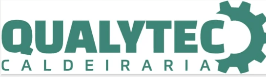

Motoboy em Jundiaí: Entrega Expressa e Logística Empresarial
A contagem começa após a confirmação dos dados e o aceite para realizar o serviço. O prazo de entrega depende da rota.
Jundiaí já fazia parte da cobertura oficial da Brulezzi desde o começo — é uma das cidades da lista original, não uma adição recente. É conhecida como um dos maiores polos logísticos do estado de São Paulo, com forte concentração de centros de distribuição pela posição estratégica entre a capital e o interior. Esse tipo de operação lida direto com coleta programada, volume maior e prazo apertado entre unidades — exatamente onde motoboy e utilitário fazem diferença.
Serviços em Jundiaí
Empresa com coleta recorrente em Jundiaí? Veja o plano mensal.
"Fiquei muito satisfeita com o serviço prestado. O motoboy foi pontual, atencioso e manteve comunicação durante todo o processo. A entrega ocorreu de forma rápida e sem qualquer problema. Recomendo com certeza!"— Luciana, cliente Brulezzi Transportes

Perguntas frequentes sobre Jundiaí
Vocês atendem Jundiaí de verdade, ou só Campinas?
Sim. Jundiaí faz parte da nossa área de cobertura desde o início — sempre esteve na lista oficial de atendimento da Brulezzi.
Qual o prazo de chegada à coleta em Jundiaí?
A previsão de chegada à coleta é de 15 a 25 minutos na Região Metropolitana de Campinas, em Jundiaí e na região central de São Paulo; nas demais localidades, de 20 a 40 minutos. A contagem começa após a confirmação dos dados e o aceite para realizar o serviço. Esse prazo é de chegada à coleta; o prazo de entrega no destino depende da rota.
Atendem empresas de logística e centros de distribuição em Jundiaí?
Sim. Jundiaí é um dos maiores polos logísticos do estado, com muitos centros de distribuição na região — é um dos usos mais comuns do nosso serviço aí, além do documento urgente pontual de qualquer empresa da cidade.
Precisa de motoboy ou utilitário em Jundiaí agora?
Falar com a equipe pelo WhatsAppO que confirmar antes da coleta
Uma cotação clara começa com o material e a rota. Você recebe valor e previsão antes de decidir.
- Tipo de material, quantidade, peso e dimensões para confirmar o veículo.
- Endereços, horário necessário e regras de acesso dos locais.
- Condições de pagamento e emissão fiscal na contratação.
- Acompanhamento pelo atendimento até a confirmação de recebimento.